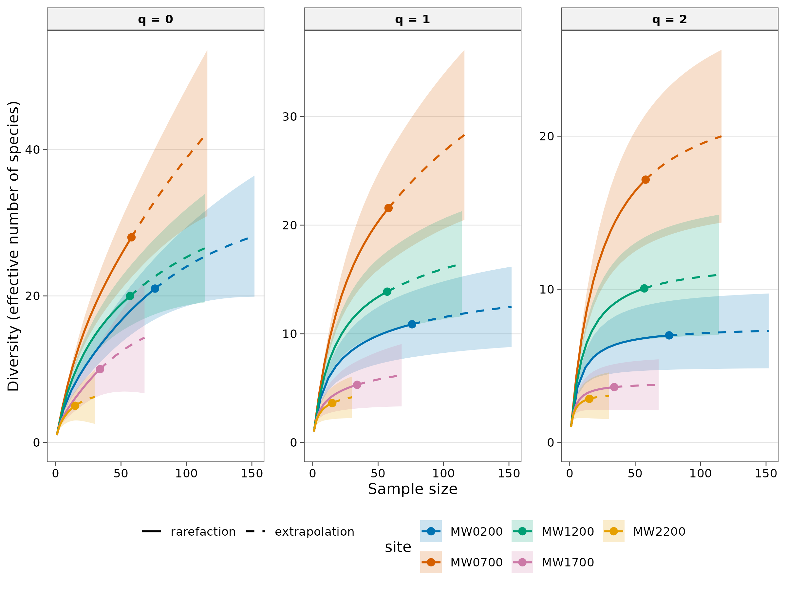
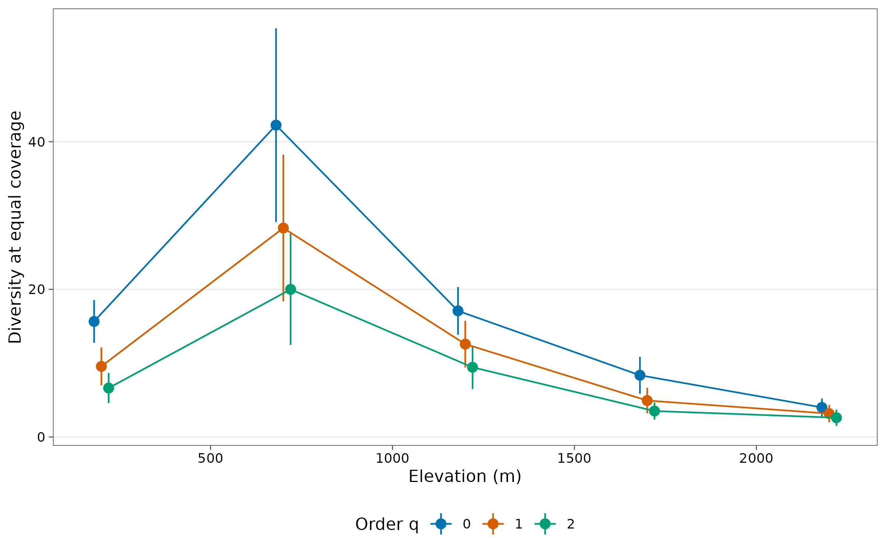

3. Fair comparisons: rarefaction, extrapolation and standardisation
Source:vignettes/articles/guide-03-fair-comparisons.Rmd
guide-03-fair-comparisons.RmdThe problem
More sampling finds more species. A site sampled twice as hard will usually show more species even if the two communities are identical. In the ant data, sample sizes differ several-fold between elevations:
count(ants, site, name = "records")
#> # A tibble: 5 × 2
#> site records
#> <chr> <int>
#> 1 MW0200 76
#> 2 MW0700 58
#> 3 MW1200 57
#> 4 MW1700 34
#> 5 MW2200 15Comparing observed richness between these sites would partly compare sampling effort, not biology. The solution is to compare all sites at the same level of sampling: by rarefying (subsampling) large samples down, or extrapolating small samples up (Chao et al. 2014).
1. Rarefaction and extrapolation curves
The concept
A rarefaction curve shows the expected diversity in a random subsample of individuals, for every up to the observed sample size . It is calculated exactly, without random subsampling. Extrapolation continues the curve beyond (to about , beyond which predictions become unreliable) using the same frequencies of rare species that drive the Chao1 estimator (Chapter 2). The two join smoothly at the observed sample, so each site has one continuous curve with a 95 % confidence band.
set.seed(1)
curves <- div_rarefy(ants, q = 0:2, knots = 30, nboot = 50)
autoplot(curves)
How to read it.
- Solid lines are rarefaction (interpolation); dashed lines are extrapolation; the point marks the observed sample.
- Where curves level off, more sampling would find few new species. Curves still rising steeply (typically at ) mean many species remain undetected.
- To compare sites, read the curves at the same x value, not at their end points. Non-overlapping bands indicate a difference; overlapping bands mean the data cannot separate the sites at that sample size.
- The and panels level off quickly: these orders are robust to sample size, which is why they are often the better basis for comparisons.
2. Size-based or coverage-based?
There are two ways to choose the common level of sampling:
| Standardise to | Meaning | Advantage | Drawback |
|---|---|---|---|
| Equal sample size (same ) | Same number of individuals or records per site | Simple to explain | A rich community is less completely sampled at a given than a poor one, so size-based comparisons understate real differences |
| Equal sample coverage (same ) | Same completeness: each site sampled to the same proportion of its community | Compares communities at the same level of representation; recommended by Chao and Jost (2012) | Coverage is less intuitive to explain |
Coverage-based standardisation is the modern default. tidydiversity standardises to a common coverage chosen by the rule of Chao et al. (2014): the highest coverage reachable by every site without extrapolating more than twice its sample.
set.seed(1)
std <- div_standardise(ants, q = 0:2, nboot = 100)
knitr::kable(std, digits = 2,
caption = "Diversity at equal coverage; m is the sample size reaching it."
)| site | q | m | method | target | coverage | diversity | se | lower | upper |
|---|---|---|---|---|---|---|---|---|---|
| MW0200 | 0 | 45.09 | rarefaction | 0.8 | 0.8 | 15.65 | 1.48 | 12.76 | 18.54 |
| MW0200 | 1 | 45.09 | rarefaction | 0.8 | 0.8 | 9.57 | 1.31 | 7.01 | 12.13 |
| MW0200 | 2 | 45.09 | rarefaction | 0.8 | 0.8 | 6.63 | 1.04 | 4.60 | 8.66 |
| MW0700 | 0 | 116.00 | extrapolation | 0.8 | 0.8 | 42.25 | 6.69 | 29.13 | 55.36 |
| MW0700 | 1 | 116.00 | extrapolation | 0.8 | 0.8 | 28.31 | 5.07 | 18.37 | 38.24 |
| MW0700 | 2 | 116.00 | extrapolation | 0.8 | 0.8 | 20.00 | 3.84 | 12.47 | 27.53 |
| MW1200 | 0 | 40.60 | rarefaction | 0.8 | 0.8 | 17.08 | 1.65 | 13.85 | 20.32 |
| MW1200 | 1 | 40.60 | rarefaction | 0.8 | 0.8 | 12.58 | 1.61 | 9.43 | 15.74 |
| MW1200 | 2 | 40.60 | rarefaction | 0.8 | 0.8 | 9.44 | 1.50 | 6.50 | 12.39 |
| MW1700 | 0 | 25.38 | rarefaction | 0.8 | 0.8 | 8.36 | 1.27 | 5.87 | 10.85 |
| MW1700 | 1 | 25.38 | rarefaction | 0.8 | 0.8 | 4.94 | 0.88 | 3.21 | 6.67 |
| MW1700 | 2 | 25.38 | rarefaction | 0.8 | 0.8 | 3.52 | 0.59 | 2.36 | 4.67 |
| MW2200 | 0 | 8.97 | rarefaction | 0.8 | 0.8 | 4.01 | 0.61 | 2.80 | 5.21 |
| MW2200 | 1 | 8.97 | rarefaction | 0.8 | 0.8 | 3.17 | 0.60 | 1.99 | 4.35 |
| MW2200 | 2 | 8.97 | rarefaction | 0.8 | 0.8 | 2.62 | 0.57 | 1.51 | 3.72 |
How to read it. Every row is at the same coverage
(0.796). m is the sample size at which each site reaches
it: sites with large samples are rarefied down; poorly
sampled sites are extrapolated up. Now the sites can be
compared fairly.
std |>
left_join(distinct(ants, site, elevation), by = "site") |>
ggplot(aes(elevation, diversity, colour = factor(q))) +
geom_pointrange(aes(ymin = lower, ymax = upper), position = position_dodge(width = 60)) +
geom_line(position = position_dodge(width = 60)) +
scale_colour_tidydiversity() +
labs(x = "Elevation (m)", y = "Diversity at equal coverage", colour = "Order q") +
theme_tidydiversity()
Interpretation. At equal coverage, ant diversity
peaks at MW0700 and is lowest at the two highest sites, for all three
orders. Because the comparison is at equal completeness, this pattern is
not an artefact of how many baits were occupied at each site. Note the
wide interval at the peak: that site is reached by extrapolation
(method column), so its value is the least precise.
3. Comparing groups: what counts as “different”?
| Evidence | Conclusion |
|---|---|
| 95 % confidence intervals do not overlap | Strong evidence of a difference |
| Intervals overlap only slightly (less than half an arm) | A difference at roughly the 5 % level (Cumming and Finch 2005) |
| Intervals overlap substantially | The data do not show a difference; do not conclude the sites are equal |
For formal tests along a gradient or between treatments, model the estimates with their standard errors as weights (see the modelling article).
How to report it
Because sampling effort differed among elevations (n = 15 to 76 records), we compared Hill numbers (q = 0, 1, 2) at an equal sample coverage of 0.796, using coverage-based rarefaction and extrapolation (Chao and Jost 2012; Chao et al. 2014) in tidydiversity. 95 % confidence intervals were obtained from 100 bootstrap replicates.
References
Chao, A. and Jost, L. (2012). Coverage-based rarefaction and extrapolation. Ecology, 93, 2533-2547.
Chao, A. et al. (2014). Rarefaction and extrapolation with Hill numbers. Ecological Monographs, 84, 45-67.
Cumming, G. and Finch, S. (2005). Inference by eye: confidence intervals and how to read pictures of data. American Psychologist, 60, 170-180.
Gotelli, N. J. and Colwell, R. K. (2001). Quantifying biodiversity: procedures and pitfalls in the measurement and comparison of species richness. Ecology Letters, 4, 379-391.